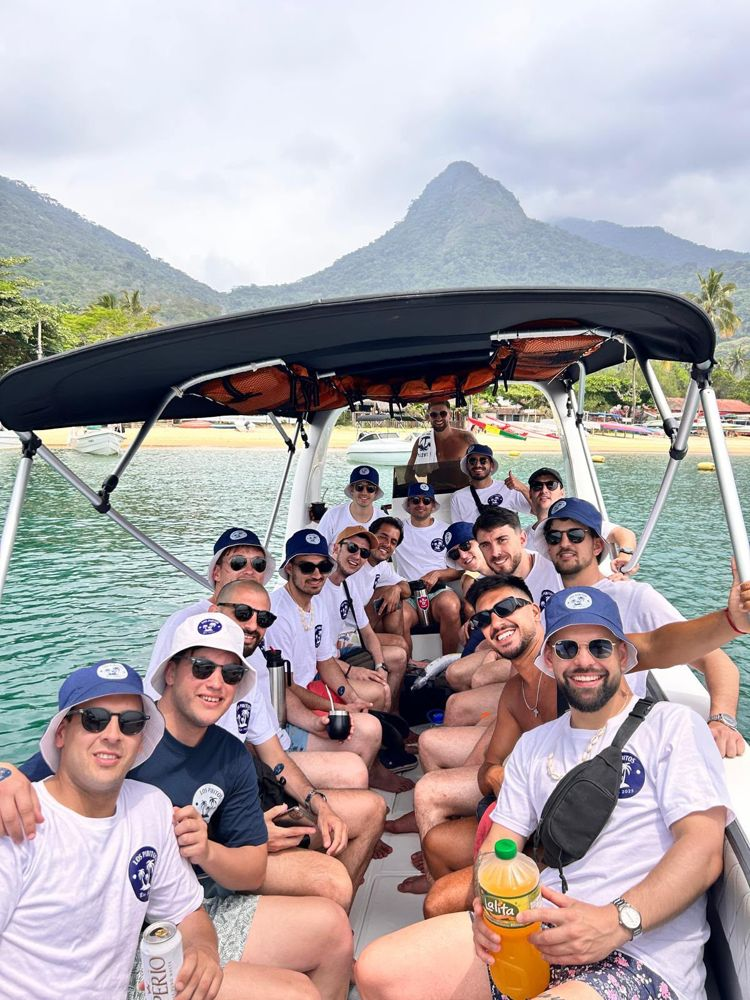
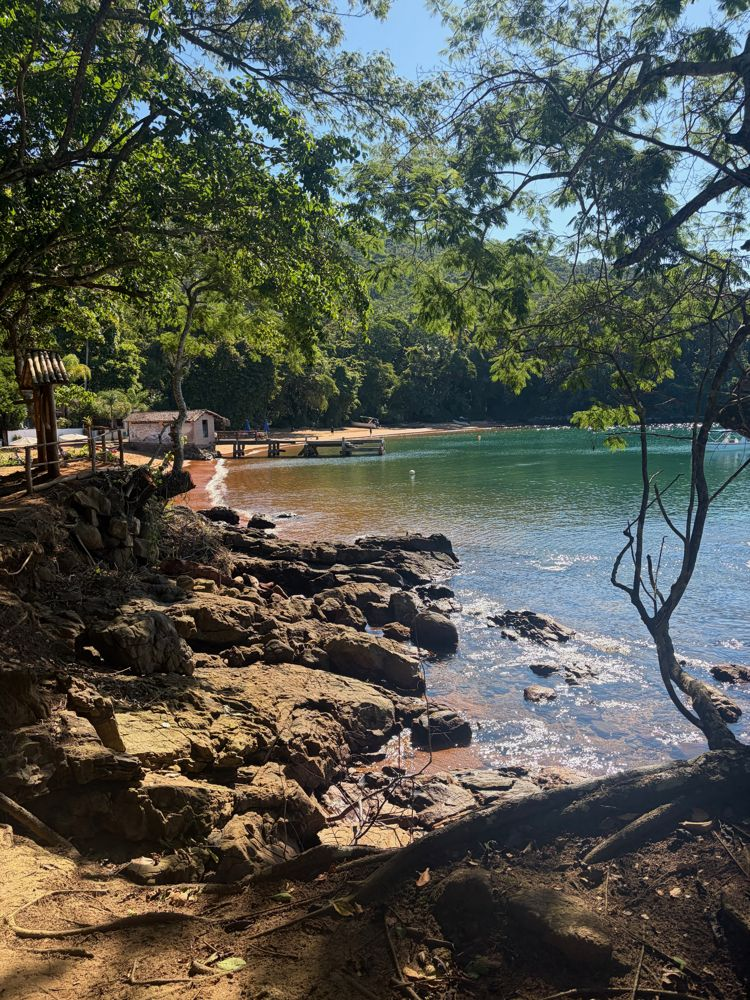
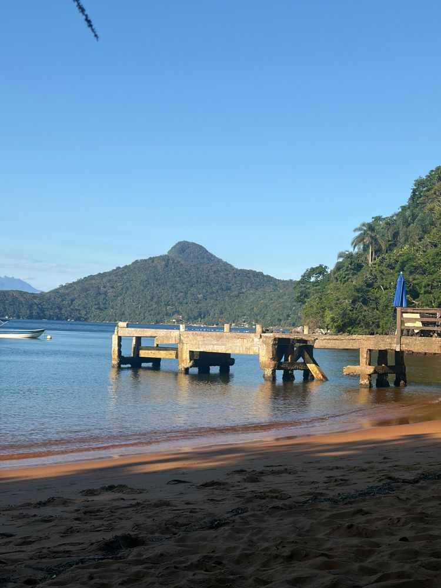

RIO IA EXPERIENCE
Angra dos Reis
& Ilha Grande
Full-day round trip from Rio: crystal-clear water, green islands and paradise beaches.
Day trip from RioBoat tripIslands & beachesLunch
PRICEFrom R$ 250
Per person, day trip from Rio with round-trip transport, boat trip and lunch.
Low-season price, valid until Dec 25, 2026.
The experience
Boat departure
Heading out to the islands from the pier, among schooners and speedboats.

Crystal-clear water
Green and turquoise coves to swim and take photos.
Waterfalls
Fresh water in the middle of the Atlantic Forest.
Real moments from our tours

Our group on boardJet ski

BeachesSunsets

Sand and sea Angra dos Reis
Angra dos Reis Golden hour
Golden hourBoats in the bay
 Angra islands
Angra islandsHidden corners
Real photos and videos from our tours.
What's included
- Round-trip transport from Rio
- Boat trip around the Angra islands
- Swim stops in crystal-clear water
- Lunch
- WhatsApp support from start to finish
What to bring
- Swimwear, towel and sunscreen
- A change of dry clothes for the ride back (transport is air-conditioned)
- A snack for the trip: lunch is mid-afternoon (there are also options at the boat bar)
- Cash for drinks and extras
Good to know
Day trip: early morning departure from Rio, back in the evening. The boat route depends on weather and sea conditions.
Want to stay on the island? We also arrange 2–3 day stays on Ilha Grande to enjoy local island life, beaches and trails at your own pace. Price on request: the price above is for the day trip only.
Want to stay on the island? We also arrange 2–3 day stays on Ilha Grande to enjoy local island life, beaches and trails at your own pace. Price on request: the price above is for the day trip only.
How to book
Booking: confirmed with 100% payment, by Pix or card (card +5%). We confirm everything on WhatsApp.
Book on WhatsApp
← See all experiences